Consider a system with  particles.
The positions of particles are given by
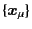 for
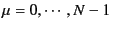,
where
particles.
The positions of particles are given by
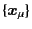 for
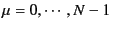,
where  is the total number of particles in the system.
Let
is the total number of particles in the system.
Let  be the number of bonds (connections) in the system.
Each bond is characterized by the pair of particles
be the number of bonds (connections) in the system.
Each bond is characterized by the pair of particles
 ,
where the bond index
,
where the bond index  runs from 0 to 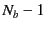.
We also define the ``group''
which is a set containing particles connecting each other.
Particles without connection belong to different groups.
We denote the number of groups in the system by 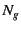.
runs from 0 to 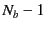.
We also define the ``group''
which is a set containing particles connecting each other.
Particles without connection belong to different groups.
We denote the number of groups in the system by 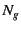.
Contrast to the simple straight chain configuration,
one extra care needs to be taken for general configurations.
That is, for a single group of particles which are all connecting each other,
sometimes the number of bonds (connections) becomes larger than
the degrees of freedom of the group except for the center-of-mass,  .
For straight chain configurations, the number of bonds are always
.
For straight chain configurations, the number of bonds are always  .
This fact means that the extra bonds are redundant and
the connector vectors for the redundant bonds can be
derived from those for the independent bonds.
See an example in Eq. (9.5) later.
.
This fact means that the extra bonds are redundant and
the connector vectors for the redundant bonds can be
derived from those for the independent bonds.
See an example in Eq. (9.5) later.
The crucial point is forming the list of independent bonds. We denote the list by 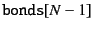. Detailed discussions for the construction of the list will be given in §9.1.3.
Let us define the connector vector
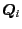 for the bond  as
as
| 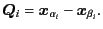 | (9.1) |
| 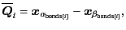 | (9.2) |
| 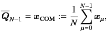 | (9.3) |